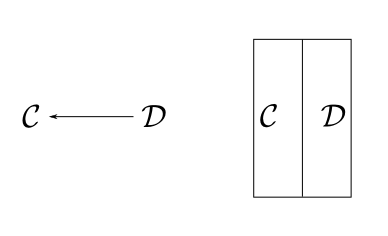
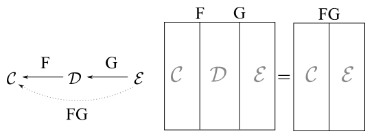
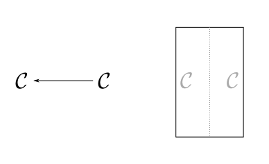
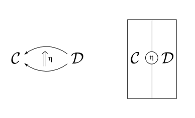
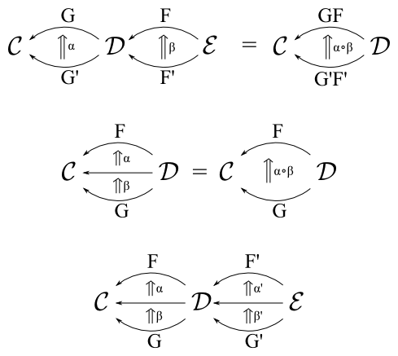
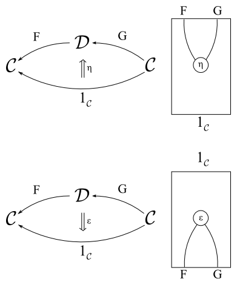
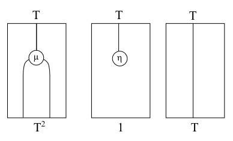
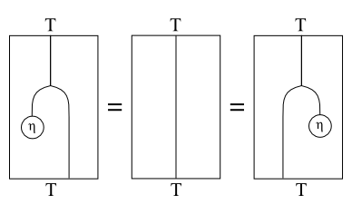

From Adjunctions to Monads
I thought I would share one of my favorite constructions in Haskell, namely that adjoint functors give rise to monads. Although it’s a trivial result in category I think showing how it manifests in Haskell is quite lovely.
In the commutative diagrams we draw objects as dots and morphisms as arrows. In a string diagrams we invert this and draw morphisms as dots and objects as lines.

Functor composition in defined as \(F : \mathcal{A} \rightarrow \mathcal{B}\) and \(G : \mathcal{B} \rightarrow \mathcal{C}\) then \(G \circ F : \mathcal{A} \rightarrow \mathcal{C}\) is drawn with parallel lines.
newtype FComp f g a = C { unC :: f (g a) }
instance (Functor f, Functor g) => Functor (FComp f g) where
fmap f (C x) = C (fmap (fmap f) x)
Generally the composition of functors \(F \circ G\) is written simply as \(FG\). Composition will diagramatically allow us to “collapse” adjacent segements in our string diagram.
The identity functor ( \(\text{Id}\) ) that maps each morphism and object to itself.
newtype Id a = Identity { unId :: a }
instance Functor Id where
fmap f x = Identity (f (unId x))Composition with the identity functor in the same category is as expected.
\[ F \circ \text{Id}_B = F \\ \text{Id}_A \circ F = F \]
The convention is to omit the identity functor, it is shown below as a dotted line.

A natural transformation in our context will be a polymorphic function associated with two Haskell functor instances f and g with type signature (Functor f, Functor g) => forall a. f a -> g a. Which could be written with the following type synonym, though we won’t make use of it.
type Nat f g = forall a. f a -> g a
The identity natural transform mapping a functor \(F\) to itself is written \(1_F\) and in Haskell is just (id). The composition of natural transformations follows the associativity laws, shown below:

The final interchange law states that we can chase the natural transformations through the functors or compose natural transformation between functors and still arrive at the same result.
\[ (\alpha \beta) \circ (\alpha' \beta') = (\alpha \alpha') \circ (\beta \beta') \]
For example a natural transformation \(\eta : 1_\mathcal{C} \rightarrow {FG}\) between the identity functor and the composition functor of \(FG\) would be drawn as:

An isomorphism \(F \cong G\) implies that composition of functors is invertible in that \(F G = \text{Id}_C\) and \(G F = \text{Id}_D\). An adjoint \(F ⊣ G\) between a pair of functors \(F : D \rightarrow C\) and \(G : C \rightarrow D\) is a weaker statement that for there a pair of associated natural transformations \((F, G, \epsilon, \eta)\) with:
\[ \epsilon : FG \rightarrow 1_\mathcal{C} \\ \eta : 1_\mathcal{D} \rightarrow FG \]

Such that the following triangle identities hold:
\[ (\epsilon F) \circ (F \eta) = 1_F \\ (G \epsilon) \circ (\eta G) = 1_G \]
Or equivelently in terms of functors we see that in a sense an adjoint is a “half-isomorphism” or “almost inverse” but some structure is lost in one direction.
\[ F \rightarrow FGF \rightarrow F \\ G \rightarrow GFG \rightarrow G \]
These are drawn below:

\(\eta\) and \(\epsilon\) are also be referred to respectively as the unit and counit.
In Haskell we have the following typeclass which unfortunately requires a functional dependency in order for type inferencer to deduce which fmap is to be used:
class (Functor f, Functor g) => Adjoint f g | f -> g, g -> f where
eta :: a -> g (f a)
epsilon :: f (g a) -> aThere are also two other natural transformations \(\phi, \psi\) which together with the adjoint functor pair form an adjunction. The adjunction can be defined in terms of the adjoint pair and this is most convienant definition in Haskell
\[ \psi \epsilon = 1_F \\ \phi \eta = 1_G \]
phi :: Adjoint f g => (f a -> b) -> a -> g b
phi f = fmap f . eta
psi :: Adjoint f g => (a -> g b) -> f a -> b
psi f = epsilon . fmap fNotably \(\phi\) and \(\psi\) form an isomorphism between functions (a -> g b) and (f a -> b) which is the same relation as the above triangle identities. Alternatively \(\eta\) and \(\epsilon\) can be expressed in terms of \(\phi\) and \(\psi\).
phi eta = id
psi epsilon = id From the Haskell Prelude we have the canonical adjoint namely curry and uncurry:
\[ \text{curry} \quad ⊣ \quad \text{uncurry} \]
instance Functor ((,) a) where
fmap f (x,y) = (x, f y)
instance Functor ((->) a) where
fmap f g = \x -> f (g x)Which we can construction an Adjoint instance from these two functor instances:
instance Adjoint ((,) a) ((->) a) where
eta x y = (y, x)
epsilon (y, f) = f yWe can check that the triangle equalities hold for this definition by showing both \((\epsilon F) \circ (F \eta)\) and \((G \epsilon) \circ (\eta G)\) reduce to the identity natural transformation ( id ).
a0 :: (a -> (b -> c)) -> a -> (b -> c)
a0 f = \f -> fmap (epsilon . fmap f) . eta
a0 f = fmap (\(y, f) -> g f y) . eta
a0 f = \x y -> f x y
a1 :: ((a, b) -> c) -> (a,b) -> c
a1 f = epsilon . fmap (fmap f . eta)
a1 f = epsilon . fmap (\x y -> f (y, x))
a1 f = \(x, y) -> f (x, y)We know a Monad is an endofunctor \(T : C \rightarrow C\) with two natural transformations \((T, \mu, \eta)\) with the usual laws:
\[ \mu \circ T \mu = \mu \circ \mu T \\ \mu \circ T \eta = \mu \circ \eta T = 1_T \\ \]

The geometric intuition is that the monad laws are reflected as topological properties of the string diagrams. Both \(\mu\) and \(\eta\) exhibit reflection symmetry and that we topologically straighten out \(\eta\) to yield the identity functor.


In Haskell we can normally construct the Monad type class from an Endofunctor and (\(\mu, \eta\)) or join and return.
class (Functor t) => Monad t where
eta :: a -> (t a)
mu :: (t (t a)) -> (t a)
(>>=) :: t a -> (a -> t b) -> t b
ma >>= f = mu . fmap f
return = eta
join = muWhat is not immediately apparent though is that every adjoint pair of functors gives rise to a monad \((T, \mu, \eta)\) over a category \(C\) induced by the composition of the functors to give rise to a endofunctor and natural transformations in terms of the unit and counit of the underlying adjunction:
\[ \begin{align} T &= G \circ F & : &C \rightarrow C \\ \mu &= G \epsilon & : &T^2 \rightarrow T \\ \end{align} \]
class Adjoint f g => Monad f g where
muM :: g (f (g (f a))) -> g (f a)
muM = fmap epsilon
etaM :: a -> g (f a)
etaM = eta
(>>=) :: g (f a) -> (a -> g (f b)) -> g (f b)
x >>= f = muM (fmap (fmap f) x)The geometric intution for this is clear:

From the Monad we can then construct the Kleisli category in the usual way.
class (Adjoint f g, Category c) => Kleisli c f g where
idK :: c x (g (f x))
(<=<) :: c y (g (f z)) -> c x (g (f y)) -> c x (g (f z))
instance Monad f g => Kleisli (->) f g where
idK = eta
g <=< f = muM . fmap (fmap g) . f
instance Kleisli c f g => Monoid (c a (g (f a))) where
mempty = idK
mappend = (<=<)In retrospect this is trivial, but importantly leads us to the more important question: Can we recover an adjunction from a monad. The answer is Yes…